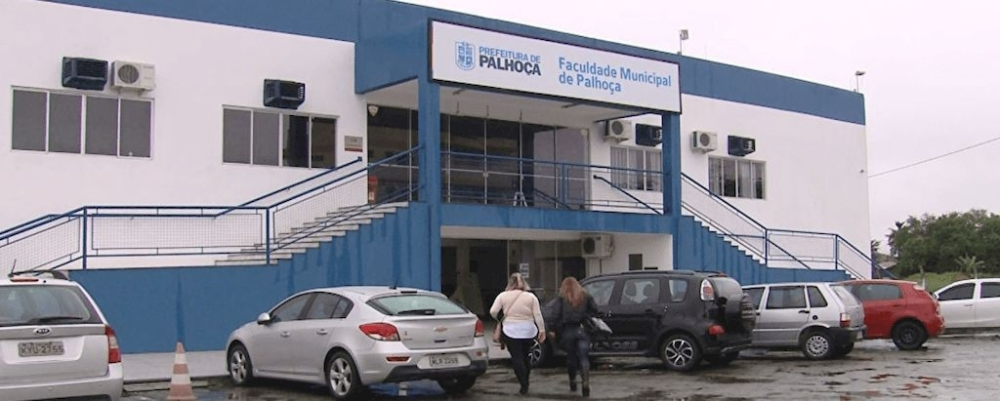

Faculdade Municipal de Palhoça
A Faculdade Municipal de Palhoça é uma instituição de ensino superior do Município de Palhoça, situado no estado de Santa Catarina. Ela possui natureza de autarquia municipal, de acordo com o art. 1º da Lei Municipal nº 2.182/2005, sendo os seus cursos de graduação gratuitos.
